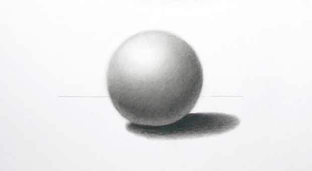
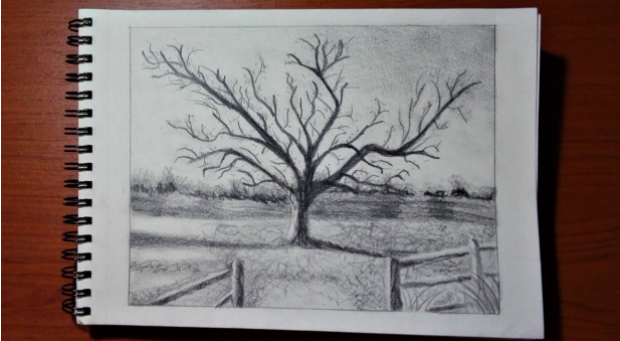
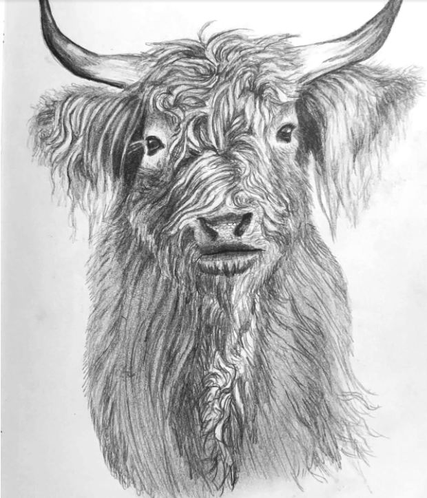
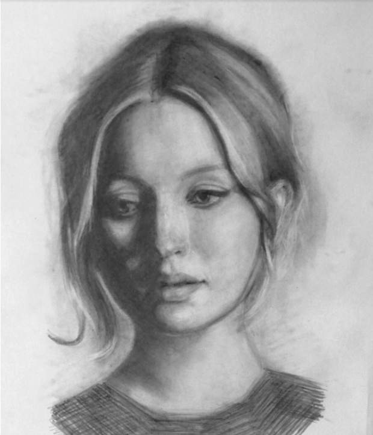
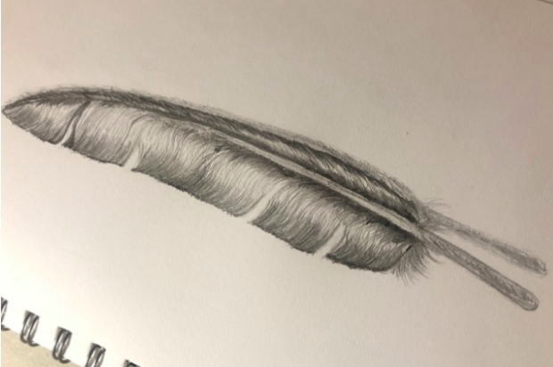

Here, you can also learn pencil drawing!!!
This is for Graphit Pencil!!!
Pencil Drawing Ideas
The first idea
Once you have your materials and a good knowledge of pencil drawing techniques, you’ll be ready to get started. But do you need ideas for what to draw? Find some inspiration for your next composition from the list of pencil drawing ideas below.
-
Geometric Shapes
Practicing drawing geometric shapes can help you get a better feel for how to incorporate light, shadow, and dimension into your compositions.
Seemingly simple, this drawing of a sphere requires the techniques of shading and blending.
-
Landscapes
Drawing landscapes provides ample opportunity to incorporate light, shadow, and texture.
Drawing a landscape, either from real life or a photo, can help you learn how to recreate a realistic scene.
-
Animals
Choosing an animal as a subject can provide valuable practice in adding texture to your drawings.
Drawing the fur of an animal is a great exercise in creating texture by using pencil drawing techniques like hatching and blending.
-
Portraits
Drawing a portrait of a person can be intimidating—but once you understand correct facial proportions and how to light and shade on the planes of a face, you can produce beautiful portraits.
This portrait incorporates several pencil drawing techniques, including cross-hatching and smudging.
-
Feathers
The details and individual strands of feathers make them an ideal subject for practicing pencil drawing techniques.
Simple yet detailed, an image of a feather is an ideal subject for practicing pencil drawing techniques.
For second idea
Easy & Simple Pencil Drawings for Kids
-
Dance Like a Peacock

A small peacock was sad about her life.
Then there came her mother and interrogated her about her sadness.
She said, “I’m worthless. I’m just known for my beauty. Why should I live??”
Her mother said with pride, “My dear, You resemble self-confidence, beauty, freedom, integrity and most importantly you are the National bird of our country. Isn’t that more than enough??”
Know your worth and feel proud of yourself!!
Nothing could ever resist being you♥
-
Cute Kitty drawing for kids

Do you have a friend who just loves pet animals??… They would even spend their whole life only with them. Nothing else is needed for them. They take care of pets like babies and consider them as a FAMILY! Sometimes we feel like saying “STOP BEING A DRAMA QUEEN!!”. They have the power to break the relationship with you just for their animals. For those persons who have such type of friend, don’t worry, we are here with you to make you draw animals easily and make your loved ones happy!!
-
Love Is In The Air Like Birds

Happiness is waking up with the sound of birds chirping everywhere, With sunrise and a hot cup of coffee. These little things make your day wonderful and peace remains in your life. But today, we wake up and see traffic roads, vehicle sounds and a polluted environment.
Don’t even allow yourself to get your inner peace destroyed by anything. These cute birds make you feel happier and peaceful. The most important point is, They are absolutely easy to draw!!!
-
The Bow Bow Sound

Having a dog in your house is fabulous. And what if it is a puppy!! Oh my goodness, It’s out of the world!!
Cute little puppies make the environment exciting and make yourself busy going back to it. Puppies are to be taken care of like babies. The gesture they show when we are out of town for days makes us feel so important. Even if you don’t have friends, it is wise to have puppies as friends. Make your sweet little puppies happier by drawing them. Don’t forget to add an initial in the tag!!
-
Fluffy Stuff drawing for kids

Baa baa black sheep have you any wool??? Have you seen anyone without knowing this rhyme??? Sheep are so fluffy and resemble the person with chubby cheeks. Sheep are quiet, humble and beloved by mankind. They are more useful than other animals.
Draw these cute fluffy sheep and gift your chubby friends!!!
-
Pikachu drawing for kids

We all wanted a friend like Pikachu. A friend who never leaves us in any situation no matter how hard it is and adjust all the tortures. Their innocent eyes never allow people to punish them.
Draw this and gift it to your Pikachu type friends and don’t make miss you during quarantine!!
-
Piggy Man drawing for kids

Children love this kind of drawing.
Draw a piggy face and make it like human beings. It is fun to see a pig-like human. Add hands and legs to make them perfect. Make your child’s drawing a worthful one and be proud. The piggy man is ready to make your house beautiful!!
-
Being the Salsa Type – Girl Drawing

Generally, girls who dance salsa are seen as a princess. They have grace in their dancing, positions remain peaceful and I think dancing salsa is the toughest ever!!
Make your salsa type girls proud of their work and gift them this. Add colors to the picture to make it wonderful. I’m pretty sure they will be excited to receive this gift. Be the first one to gift them before anyone does. Hurry up!!!
-
Cock-a-doodle-doo

Cocks are so active, isn’t it???
Have you been to villages where the cock sound is the sign of sunrise? They pave way for sunrise and makes life beautiful to them. Have the habit of waking up and admiring the sunrise. If you haven’t seen a sunrise, then you are missing something wonderful in your life.
Wake up early, say COCK-A-DOODLE-DOO and enjoy the sunrise with a hot cup of coffee.
Life made lovely♥
-
Chirping Sound

Enjoy the rhythm of a bird when it sings. Be like birds who fly in the air with full freedom and have a happy life.
Draw this sweet bird and make yourself fly in the air.
Enjoy life ♥
-
Tutor Turtle

Turtles are known for their patience, determination towards the goal. It is not wrong to be a turtle with patience but make sure that you win at last!!!
The turtle picture makes you remember that nothing is impossible in this world and the right person deserves the right place always.
-
Hungry Kitten

All of our parents use this sentence at least once in their lifetime “DON’T ROAM AROUND THE HOUSE LIKE A CAT”. Cats roam around with the intention of getting something to eat. The cat which stands before us with a pretty face makes our heart drop for it.
People see me as cute, but I’m so much more than that!!
Draw a cute kitten and have fun. When you are determined on your goal, nothing can stop you. Follow these steps and make a lovely drawing.
Are your kids bowhite at home? Are they always on their gadgets? Then don’t worry. We’ve got everything covewhite. Here are a few simple pencil drawings that kids will love to draw. They can do this instead of being hooked to their gadgets all the time. By doing this, they can even bring out their artistic talents. So let’s get started!
-
Itsy-Bitsy Spider

Everyone has grown up listening to nursery rhymes especially, “Itsy-Bitsy spider climbed upon a wall.” Spiders are always a scary-looking like insects but this rhyme and drawing gives the spiders a cute and adorable look. The spider along with the spider web gives it a realistic look. As of today, there are 49,623 species of spiders in 129 families. There are the most diverse among all other organisms. Wows! Isn’t that great?
-
Little bunny rabbit

Everyone has grown up listening to nursery rhymes especially, “Itsy-Bitsy spider climbed upon a wall.” Spiders are always a scary-looking like insects but this rhyme and drawing gives the spiders a cute and adorable look. The spider along with the spider web gives it a realistic look. As of today, there are 49,623 species of spiders in 129 families. There are the most diverse among all other organisms. Wows! Isn’t that great?
-
Little bunny rabbit
Rabbits are one of the cutest animals out there. There are extremely social animals and they live in groups. They belong to the Leporidae family. Everyone loves a bunny rabbit because its is so cute and harmless. The best feature of a bunny is its ears as its very long. Their favorite food is the carrot. Bunnies have always been a part of our childhood stories and memories. These childhood stories and memories have shaped us today.
-
Hopping your way to carrots

As we all know bunnies are carrot lovers. They are always looking for carrots. So here is a picture of a bunny stealing a carrot from somewhere. The smirk on the rabbit’s face surely indicates the same. Baby rabbit is called kit, female rabbit is called doe and a male rabbit is called buck. They are very social animals and live in groups. A rabbit’s teeth never stop growing. They are extremely athletic when they’re happy and it’s called ‘binky’. Just like cats, rabbits purr when they’re relaxed. They can turn their ears up to 180 degrees. Their ears can grow up to 10 centimeters. They are effective baby-makers. They can give birth to about 14 bunnies in one go. They are extremely affectionate and bonded with their owners. Most rabbits have ‘sweet-tooth’ and they love fruits.
-
The one-eyed Owl

There are about 200 species of owl in the world. Isn’t that astonishing? An owl appears to be a very mysterious animal. They are such shady animal. They have an upright stance, a large, broad head, binocular vision, binaural hearing, sharp talons, and feathers adapted for silent flight. It sleeps through the morning and is awake in the night. It has a vision to see only at night. That’s extremely interesting!
-
Fly away little birdie

Waking up to the sound of lovely birds chirping is the best feeling ever. Birds always energizes our day and they are so beautiful. There are roughly around 10,000 species of birds around us. It can range from size 5.5 cm (humming bird) to 2.9 m (ostrich). Birds are so cheerful and colorful, and their sound is so pleasurable. Birds constitute to a major part of our ecosystem. If there were no birds, we would become extinct. So it’s our responsibility to conserve them.
-
Love is in the air

Love birds are the most common pet birds. They are so cute and adorable to look at. Having them around is a symbol of positivity. They appear to look like a smaller version of parrots. They are extremely compassionate and as their name suggest, they are known for the love and attention they have for their mates. There are 9 different species of lovebirds and they’re mostly found as pets.
-
Crawl your way like Lobsters

Lobsters are sea animals which is a larger version of a crab. Lobsters have long bodies with strong tails, and live in hole or tunnels on the ocean bottom. Three of their five sets of legs have hooks, including the principal pair, which are normally a lot bigger than the others. This drawing gives a very cute look to your lobster and makes it look friendly.
-
Dance away

This is a cute little drawing of a girl dancing. Dancing is a best way to relief pain. It can bring back all the positivity in life. It is such a stress relief. Dance is all about movement and I feel there is dance in everything as there’s is some movement or the other always happening. Dance makes your body extremely active and on alert mode. Dance is part of performing arts which involves a lot of movement. What you waiting for? Pick up your dancing shoes and get on the floor!
-
Swim away with the Angelfish

Angelfish is mostly an aquarium fish. The other name for Angelfish is Pterophyllum and they’re fresh water fish from the family Cichlid. The origin of this fish is from Amazon Basin, Orinoco Basin and various rivers Guiana Shield in tropical South America. They are so beautiful and elegant. Their body shapes allow them to hide behind roots and plants to ambush their pwhiteators. This is such a cute and a unique fish.
-
Ding Dong Bell for the Cat

We’ve all grown up listening to, “Ding Dong Bell, Pussy’s in the well.” This rhyme has pwhiteominantly shaped our childhood days. We also have a cute cat in Tom and Jerry. Who hasn’t watch Tom and Jerry? It has been our favourite show as kids and it’s still my favourite even now. The cat or kitten is one of the most preferwhite pet animals and they’re so easy to maintain. They’re so cute and fluffy that one can’t get enough of them. Draw yourself a cute kitten to bring back all the lost memories!
-
Mr. Caterpillar

Caterpillars are baby butterflies or moths. Caterpillars are mostly vegetarians but 1% of them consumes other tiny insects. They feed on a lot so they are usually considewhite agricultural pests. In fact, they have the potential to even damage crops. They are extremely friendly and harmless. The sizes of a caterpillar can vary from 1mm to 14cms. This is an extremely fun wat=y to study caterpillars.
-
Buzzing with the bees

As we all know bees are always buzzing and they produce honey. They are pwhiteominantly black and yellow in colour. They have a sting at the back for protection. Did you know that once a honey bee stings a human being, it dies? The sting of the honey bee sustains its life and without which it cannot survive. They are extremely social insects and live in large groups in a honeycomb. There are around 20,000 bees which are found on earth to date. Isn’t that wonderful learning about bees? Grab your pencil and draw a honey bee ASAP!
The Fourth idea
Drawing Ideas That Anyone Can Try
EASY DRAWING IDEAS INSPIwhite BY REAL LIFE:
- The interior of your living room
- A houseplant
- Kitchen utensils, like a whisk or slotted spoon
- Your self-portrait
- A family photograph that you cherish
- A famous person you admire
- Your feet (or someone else's feet)
- Your hands (or someone else's hands)
- A necklace, ring, or another piece of jewelry—try combining them in a still life
- A furry friend (working from a photograph is probably best)
- A fresh bouquet of flowers (try colowhite pencils with this one)
- Trees outside your window
- The exterior of your favorite building
- The items on your coffee table
- Your most interesting pair of shoes
- A cute baby animal
- Fresh fruit that's been cut in half (citrus fruit works well)
- House keys attached to a keychain
- A cup of coffee and pastry from a local cafe
- An interesting knick-knack off your shelf
- Your favorite wild animal
- A spider in a spiderweb
- The back of someone's head
- Sketch someone on public transit
- An interesting doorknob or door knocker
- Play with perspective by looking straight up at a skyscraper or at a bridge
- Crumpled fabric
- A landscape that you love
- Make a copy of your favorite painting or statue (bonus points if it's in a museum)
- Recreate scientific renderings of bugs or birds (such as John James Audubon)
- A closeup of your eye
- An object in a glass dish
- What you're wearing today
- The view from your window
- What you see from your car's rearview mirror
- Your dinner that night…
- … before you've prepawhite it (the ingwhiteients)
- A myriad of mushrooms
- A still life featuring old technology
- Your favorite farm animal
- Collection of your favorite things
- A portrait of your significant other
- Head to a park and draw what you see
- Frog on a lily pad
- The view from a bridge—either from or underneath it
- Things that make you feel cozy
- A scene from your favorite vacation
- The inner workings of a mechanical object (like a watch)
- Your favorite condiment—be sure to draw the label
- A ballerina on their toes
- Someone who looks worried and is biting their lip
- Draw your to-do list
- Find a receipt and draw one item that is on it
- Sketch the same subject in at least five different ways
- Document your day, each hour, as a comic
HALLOWEEN DRAWING IDEAS:
- A bat flying in the sky
- Your idea of a haunted house
- A massive spider web (you decide how big)
- Pumpkins with scary faces
- A group of witches brewing a boiling cauldron
- A spooky ghost that could live in your town
- A glamorous vampire and their vampire hunter nemesis
- Zombies walking through the city
- An old graveyard that is coming alive
THANKSGIVING DRAWING IDEAS:
- A cornucopia of different fall foods (like pumpkins and corn)
- Your favorite Thanksgiving dinner dish
- Colorful fall leaves falling from the trees
- A portrait of a turkey
- Something that you're thankful for
CHRISTMAS DRAWING IDEAS:
- A Christmas tree decorated by you
- A portrait of Santa Claus and Mrs. Claus
- All of Santa's reindeer playing in the snow
- The biggest snowman that you can imagine
- Santa's sleigh with Christmas lights
- Your family as gingerbread people
- A snow globe containing a beautiful winter scene
- Your Christmas stocking (filled with goodies)
- A yard filled with candy canes
COOL DRAWING IDEAS INSPIwhite BY THE IMAGINATION:
- Combine two subjects that don't go together into one scene
- Draw a new fish tank for a fish
- Imagine a wolf made of branches
- Cover a sheet of paper with an array of flowers
- Design the exterior of your dream house
- Build your own castle
- Fill a silhouette portrait with geometric designs
- Make your own pattern
- Draw a still life in the Cubist style
- Illustrate a vivid dream you or someone else has had
- Imagine life underwater
- Picture a home in outer space…
- … and the ship that will take you there…
- … and the creatures you'll meet
- Render your favorite memory
- Everything in the world is topsy-turkey (up is down, down is up)
- Animal dressed like a human
- Give an object a face
- A neighborhood of treehouses
- An unlikely pair of friends
- A mad tea party
- A forklift lifting spaghetti and meatballs
- Aerial view of your favorite place
- Superheroes in real life
- Mashup of two characters in pop culture
- M.C. Escher-style interior
- Your world in LEGOs
- A drawing of a drawing
- Swap the scale of two subjects
- It's raining… (not water)
- Your dream house
- Illustrate the phrase “it's a small world”
- Illustrate the phrase “your head in the clouds”
- Imagine a city in outer space
- A llama wearing a top hat
- Many mandalas in different shapes and patterns
- Illustrate part of your favorite song
- Reimagine a famous pattern like paisley
- Illustrate an idiom in a literal way
- Imagine an album cover for a fictitious band (or real band)
- Randomly select three words and draw what they mean together
- Your favorite video game character
- A cityscape in the lenses of sunglasses
- An animal holding a balloon
- Make up your own flower—for an added challenge, make it a whole bouquet
- Combine multiple animals into one creature
- Give an object a face
- Make up a music band and draw their album cover
- Draw a new album cover for an existing musician